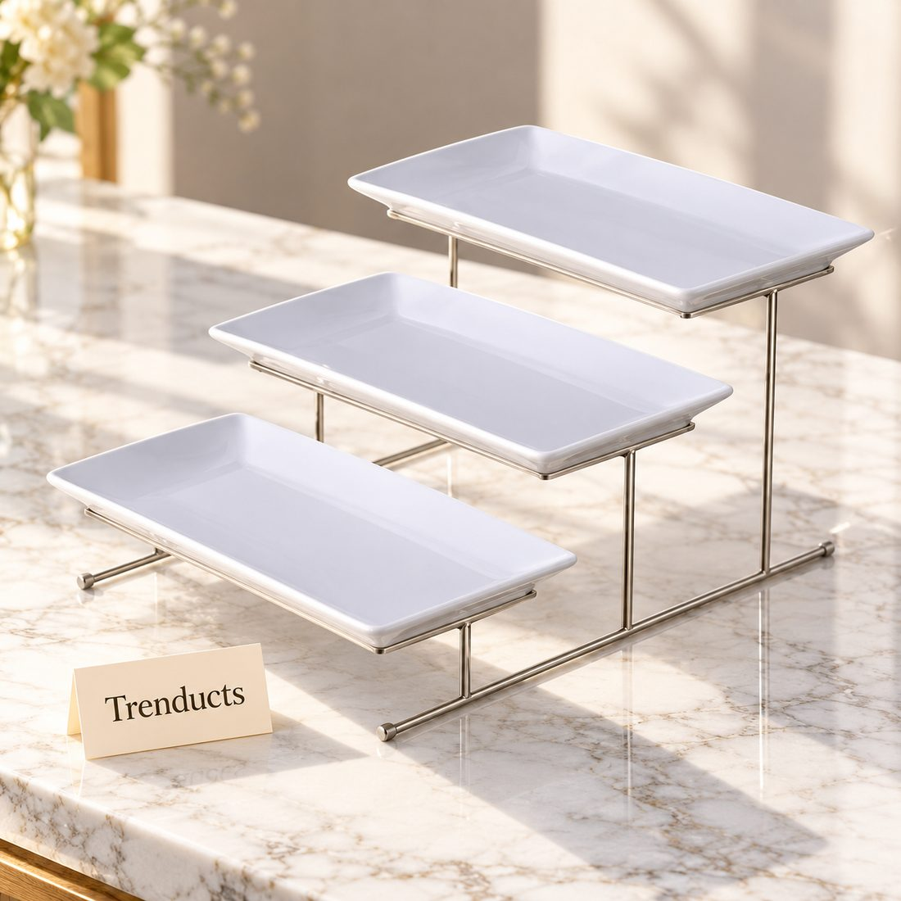
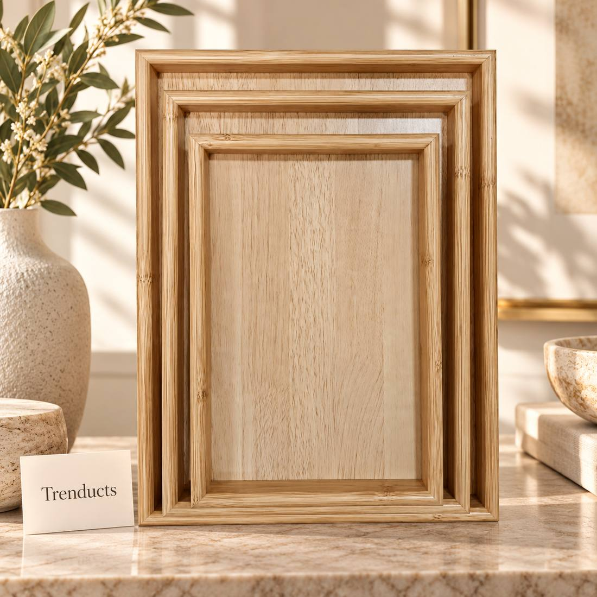
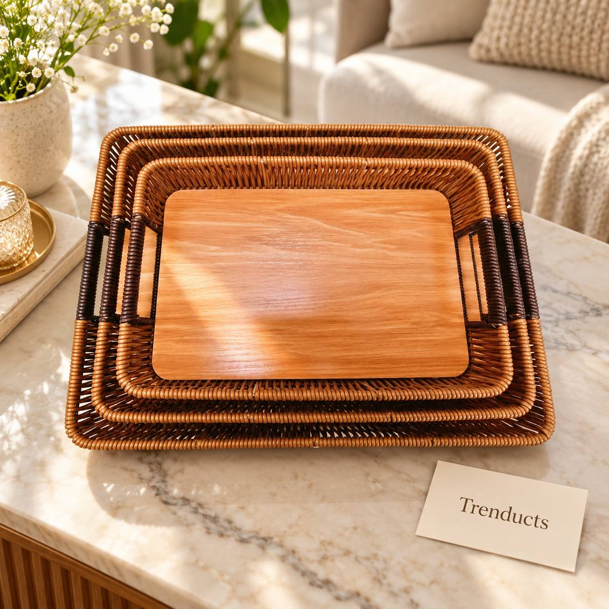

A practical guide to serving trays: which types to own, how to style a tea tray for guests, tiered trays for parties and caring for wood and rattan.

Mehmaan nawazi, hospitality, is a point of pride in Pakistani culture. Guests are offered chai within minutes of arriving, followed by biscuits, nimko, samosas and whatever else is in the kitchen. And all of it arrives on a tray. The serving tray may be the most used item in a Pakistani home after the pateela, yet many of us do not give it much thought. The right trays make hosting easier and look much more welcoming.
A small collection covers almost every situation:
Handles are important: a tray full of hot tea is heavy and slippery.
A neat tea tray creates a good first impression:

Tiered trays save table space and look festive. Use them for mithai on Eid, cupcakes at birthdays, sandwiches and chaat at kitty parties, and dry fruit at weddings. Put heavier items on the bottom tier and lighter ones on top. They also look lovely as a centrepiece on the dining table.
Wood and rattan should not be soaked; wipe them with a damp cloth and dry immediately.
Trays are not only for guests. A tray makes it easy to take breakfast to an elderly parent, bring medicines and water to a sick family member, or carry dinner to the lounge during a cricket match. A tray in the bathroom holds perfumes and skincare neatly.

Oil wooden trays occasionally with a little food-safe oil to stop them drying and cracking. Keep metal trays dry to avoid tarnish. Stack trays with a cloth between them.
A beautiful tray is a classic gift for a new home, a wedding or Eid. Fill it with dry fruit, mithai or a tea set to make a complete present.
If you would like to upgrade your hosting kit, browse these serving trays for every occasion, from rattan and wooden trays to tiered stands with gold detail. Trenducts delivers all over Pakistan.
Good hospitality starts with care, and a well-laid tray is one of the easiest ways to show it.